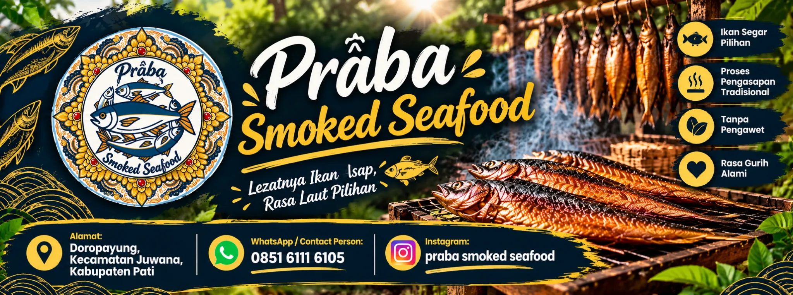
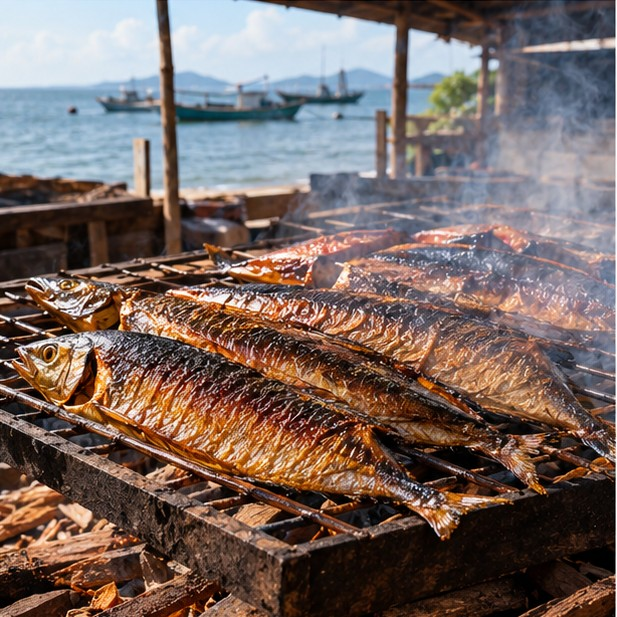
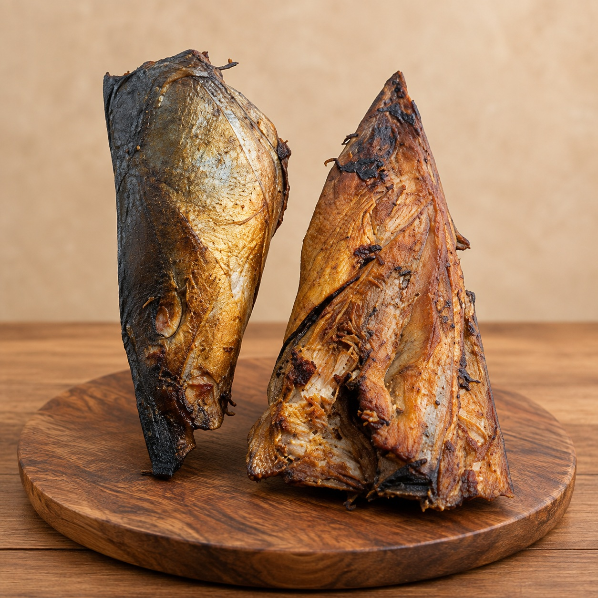

Andyka Shepty Agil
Praba Sea Procesing Food didirikan oleh Andyka Shepty Agil pada 2026.
Praba Sea Procesing Food didirikan karena tergerak untuk memanfaatkan sumber daya lokasi yang strategis dalam industri perikanan. Berbasis di Desa Doropayung, Juwana, kami mengembangkan produk ikan asap dengan perhatian pada bahan baku, proses pengolahan, mutu, dan pengelolaan produk.

PRABA / JUWANAKami menempatkan mutu sebagai rangkaian keputusan yang dapat dipahami: bahan baku diperiksa, proses dikelola, kebersihan dijaga, penyimpanan diperhatikan, dan informasi sumber dibedakan secara transparan.
Praba Sea Procesing Food adalah usaha pengolahan hasil perikanan yang dibangun di Juwana, Pati, Jawa Tengah, dengan fokus awal pada produk ikan asap.
Lingkungan perikanan Juwana mempertemukan berbagai aktivitas, mulai dari pendaratan hasil tangkapan, pelelangan, perdagangan, pengangkutan, pengolahan hingga distribusi.
Bagi Praba Sea Procesing Food, kualitas tidak hanya dipahami sebagai rasa akhir sebuah produk. Mutu dibangun sejak bahan baku diterima hingga produk didistribusikan kepada konsumen.
Praba berangkat dari Juwana, dengan arah pengembangan yang bertahap dan jelas.
Praba Sea Procesing Food didirikan oleh Andyka Shepty Agil pada 2026.
Nama Praba dimaknai sebagai cahaya, menjadi bagian dari identitas dan arah pengembangan usaha.
Visi Praba adalah mengembangkan produk yang aman dan berkualitas dengan tetap memberi perhatian pada aspek lingkungan.
Praba menargetkan pengembangan menjadi brand yang berintegritas di wilayah Juwana, sambil melanjutkan produk ikan asap dan mengembangkan produk olahan ikan lainnya.
Rangkaian berikut adalah proses yang disampaikan oleh pemilik usaha.
Bahan baku berasal dari gabungan berbagai sumber. Ikan jahan dalam kondisi segar digunakan untuk produk Asap Kepala Ikan.
Ikan dipotong sesuai ukuran yang diperlukan, kemudian dibersihkan menggunakan air mengalir.
Pengasapan dilakukan di atas sumber panas menggunakan tungku berbahan bakar tongkol jagung, sekitar 5 menit dan diulang 3 kali.
Setelah pengasapan, produk dibiarkan pada suhu ruang terlebih dahulu, kemudian dikemas atau disimpan dalam pendinginan es sebelum dijual.
Juwana merupakan salah satu kawasan penting dalam aktivitas perikanan Kabupaten Pati. Aktivitasnya mencakup kapal, hasil tangkapan, pelelangan, perdagangan, pengangkutan, penyimpanan, pengolahan, hingga distribusi.

Aktivitas pelelangan dan perdagangan hasil perikanan.
Kawasan pelabuhan yang menjadi bagian dari ekosistem perikanan.
Pendaratan → perdagangan → pengolahan → distribusi.
Angka berikut adalah data referensi wilayah dan contoh aktivitas pada waktu tertentu. Data tersebut bukan kapasitas produksi Praba.
Data di atas merupakan contoh aktivitas yang dilaporkan pada waktu tertentu dan tidak dapat ditafsirkan sebagai kapasitas tetap TPI maupun kapasitas produksi Praba Sea Procesing Food.
Mutu adalah rantai, bukan satu langkah.
Kesegaran, kondisi fisik, kebersihan, suhu, serta kecepatan penanganan menjadi bagian penting dalam menjaga kualitas ikan.
Persiapan bahan, kebersihan peralatan, waktu, suhu, pengeringan, pengasapan, hingga pendinginan perlu dikelola secara terkendali.
Kebersihan tangan, peralatan, permukaan, air, wadah, dan lingkungan kerja membantu mencegah kontaminasi silang.
Penyimpanan, pendinginan, pengangkutan, waktu distribusi, dan kondisi wadah turut berperan dalam mempertahankan mutu.
Pemeriksaan awal dapat memperhatikan kesegaran, kondisi fisik, kebersihan, suhu, waktu penanganan, kerusakan fisik, serta kondisi ikan setelah didaratkan. Prinsip edukatif yang sederhana: cepat, bersih, dingin.


Rangkaian edukatif proses meliputi penerimaan bahan, pemeriksaan, pembersihan, persiapan, pengeringan, pengasapan, pendinginan, dan penyimpanan.
Praba Sea Procesing Food menggunakan prinsip-prinsip sistem manajemen mutu ISO 9001 sebagai salah satu referensi dalam memahami bagaimana proses usaha dapat dikelola secara konsisten, terdokumentasi, terukur, dan terus diperbaiki.
Praba Sea Procesing Food saat ini belum memiliki sertifikasi ISO 9001. Namun, kami berkomitmen untuk secara bertahap membangun dan menyempurnakan sistem kerja yang selaras dengan prinsip-prinsip manajemen mutu ISO 9001 sebagai bagian dari pengembangan profesionalitas usaha dan kesiapan menuju proses sertifikasi apabila persyaratan serta kesiapan internal telah terpenuhi.
Lihat sumber ISO 9001 →ISO 14001 digunakan sebagai referensi untuk memahami prinsip sistem manajemen lingkungan, termasuk pengelolaan aspek lingkungan dan peningkatan kinerja lingkungan secara berkelanjutan.
Praba Sea Procesing Food saat ini belum memiliki sertifikasi ISO 14001. Meskipun demikian, kami berkomitmen untuk meningkatkan praktik pengelolaan lingkungan secara bertahap melalui penggunaan sumber daya yang lebih efisien, pengelolaan limbah, pencegahan pencemaran, dan peningkatan kesadaran lingkungan dalam kegiatan operasional.
Lihat sumber ISO 14001 →Pemeriksaan mutu dapat dimulai dari pengamatan karakteristik fisik, tetapi pemeriksaan visual bukan pengganti pengujian laboratorium atau pemeriksaan keamanan pangan.
Ikan dengan kondisi baik umumnya memiliki mata yang jernih dan relatif cerah.
Perhatikan warna, kebersihan, lendir, dan bau.
Daging yang baik cenderung elastis dan tidak mudah hancur.
Perhatikan aroma khas ikan dan tanda-tanda bau menyimpang.
Perhatikan lendir, kerusakan fisik, perubahan warna, dan tanda pembusukan.
Mata relatif jernih dan cerah.
Mata dapat tampak kurang jernih atau kusam.
Amati warna dan kebersihan secara keseluruhan.
Perubahan warna, lendir atau bau menyimpang perlu diperhatikan.
Tekstur relatif elastis dan tidak mudah hancur.
Tekstur dapat melunak atau berubah warna.
Permukaan diperiksa untuk kebersihan dan kerusakan fisik.
Lendir berlebih, perubahan warna, kerusakan atau tanda pembusukan perlu diperhatikan.
Ilustrasi digunakan untuk tujuan edukasi. Pemeriksaan visual tidak menggantikan pengujian laboratorium atau pemeriksaan keamanan pangan.
Bakteri, virus, dan parasit.
Residu, kontaminan kimia, logam berat, dan bahan kimia yang tidak sesuai.
Serpihan, benda asing, dan material peralatan.
Untuk jenis ikan tertentu, histamin dapat menjadi risiko yang perlu dikendalikan melalui penanganan suhu dan waktu yang tepat. Penjelasan ini bersifat edukatif dan bukan klaim bahwa produk Praba bebas histamin.
Penanganan ikan tidak berhenti setelah proses pengolahan. Pendinginan, penyimpanan, transportasi, pemantauan suhu, kebersihan wadah, dan waktu distribusi turut berperan dalam mempertahankan mutu.
FIFO — First In, First Out berarti produk yang masuk lebih dahulu diprioritaskan untuk digunakan atau dikeluarkan lebih dahulu, dengan tetap memperhatikan kondisi produk dan ketentuan masa simpannya.
FEFO dapat diterapkan ketika produk memiliki batas kedaluwarsa atau masa simpan yang relevan.
Praba Sea Procesing Food berkomitmen untuk terus meningkatkan kualitas produk, konsistensi proses, keamanan pangan, efisiensi operasional, serta kepedulian terhadap lingkungan.
Walaupun saat ini Praba Sea Procesing Food belum memiliki sertifikasi ISO 9001 maupun ISO 14001, kami berkomitmen untuk secara bertahap membangun dan menyempurnakan sistem manajemen yang selaras dengan prinsip kedua standar tersebut.
Transparansi sumber membantu membedakan data wilayah, referensi standar, ilustrasi, dan informasi Praba.